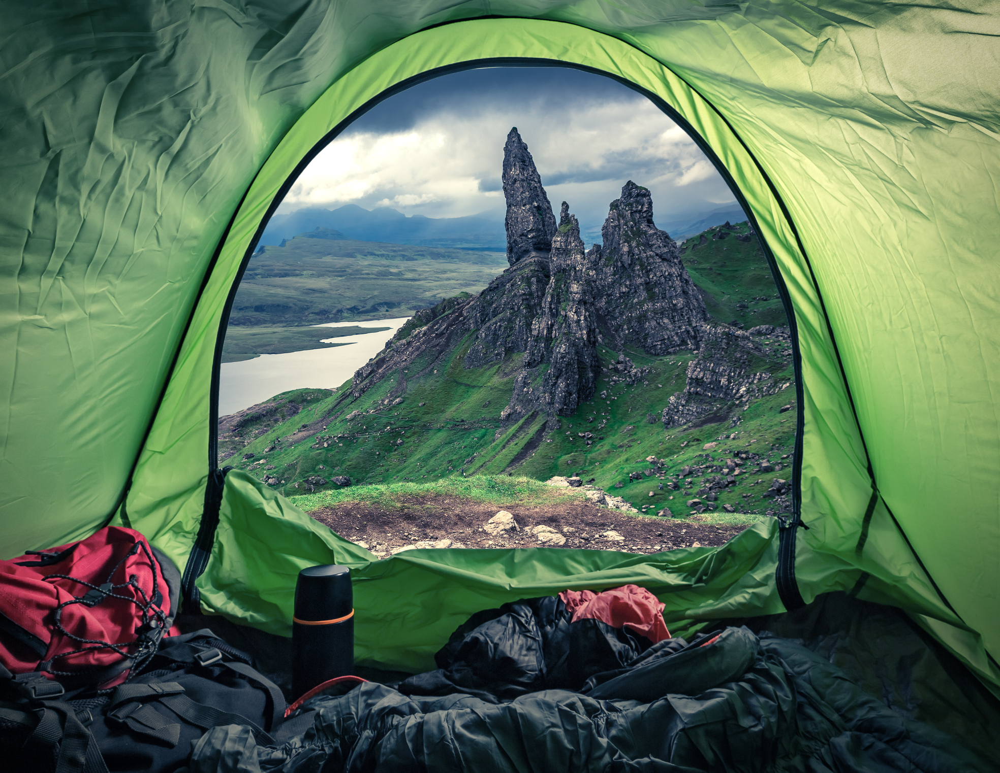
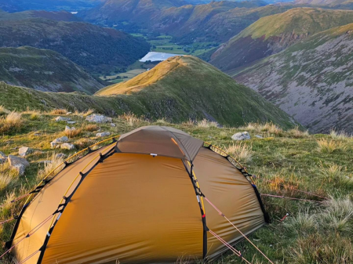
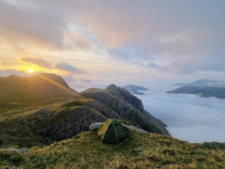

Home
Joe Sayer
@joesayer2
Great end, Ill crag, broad crag, scaffel pike, Allen crag, red beck top and glaramara. Could really see anything in morning or evening 🤷🏽♂️🤣, rain a little bit on night but wasn’t that bad
Joe Sayer
@joesayer2
Day 2 of 8 (yesterday Friday 15th) Grisdale Tarn to Easedale Tarn Over Fairfield then along to Nab Scar, over to Helm Crag and Gibson Knot then across to Steel Fell, round to Tarn Crag before dropping down to Easedale Tarn.
Joe Sayer
@joesayer2
Great camp last night and a pretty amazing sunrise this morning! Seeing the Milky Way last night was also incredible, just couldn't capture it on my phone.
What's happening?